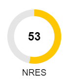

Creates a TeamGraphic object
Extends GraphicComponent to create a TeamGraphic visual ('doughnut'!). The super constructor takes arguments:
super(data, x, y, width, height, drawComponent, isSelectable = true);
N.B. class provides its own 'drawComponent' method.
An Aggregate object
A TeamsLayout object
Indicates if component is checked
Array of children objects.
HTML string for context menu.
Object containing data for component.
Function to draw object. This must have the signature
function drawComponent(ctx: CanvasRenderingContext2D, data: any,
x: number, y: number, width: number, height: number, selected: boolean) {
// Code to draw object
}
GraphicArea object GraphicComponent belongs to.
Height of graphic object.
Indicates if object can be selected.
The layout object
Parent object.
Indicates if object is selected.
Width of graphic object.
Horizontal position of object.
Horizontal offset.
Vertical position of object.
Vertical offset.
Adds a child graphics component.
Child component to add.
Draws the team graphic.
Canvas context.
Data.
x coordinate.
y coordinate.
Width of component.
Heignt of component.
Component is selected.
Generated using TypeDoc
Extends GraphicComponent to draw a team icon.
Description
Provides the functionality for drawing a basic team graphic
